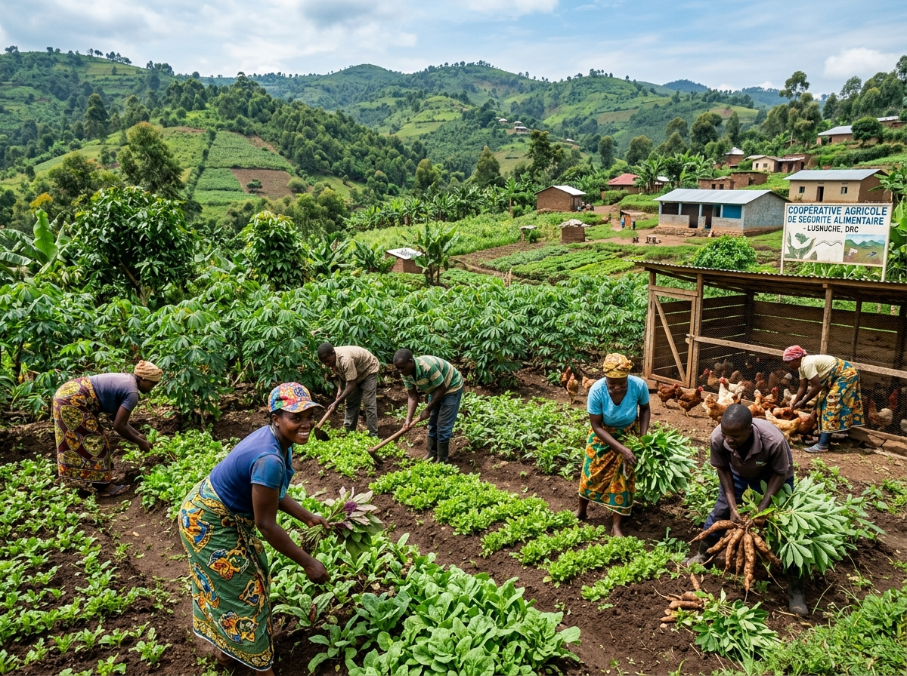
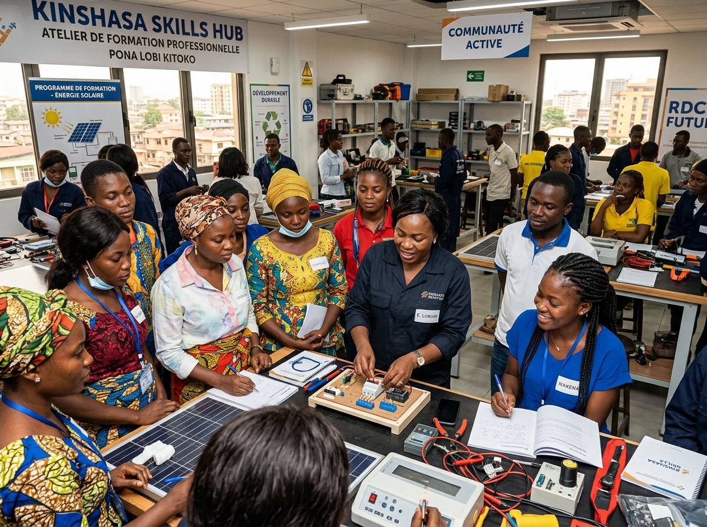
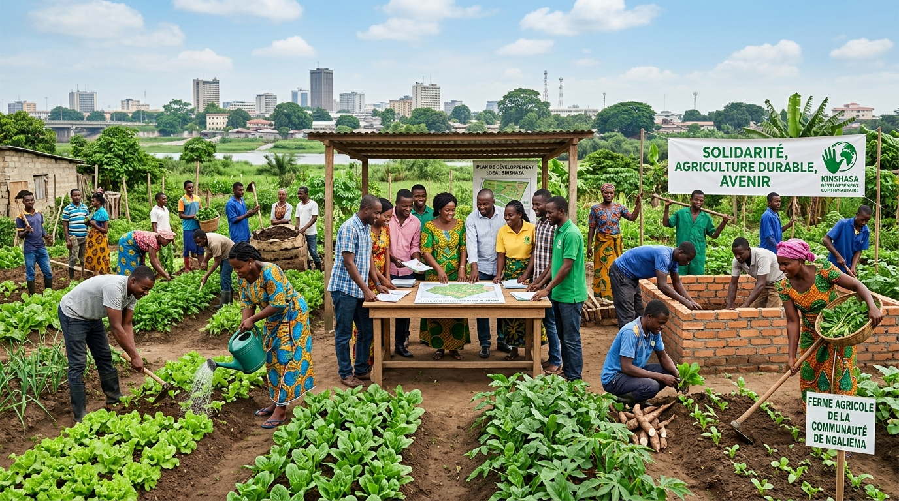

La Fondation MBOLE ASBL œuvre au cœur de Kalamu pour le développement
socio-économique, l'agriculture communautaire et l'amélioration des conditions
de vie des populations les plus vulnérables.
La Fondation MBOLE ASBL est une organisation non gouvernementale et humanitaire basée à Kinshasa. Implantée au cœur de la commune de Kalamu, l'association œuvre pour le développement socio-économique, l'appui communautaire et l'amélioration des conditions de vie des populations vulnérables.
Fondée et coordonnée par Emmanuel-Désiré Mbole Bowalodje, notre institution croit fermement en la force des communautés locales et en leur capacité à bâtir un avenir d'espoir durable.
« En soutenant notre secteur agro-pastoral, en formant notre jeunesse et en venant en aide aux familles les plus vulnérables de Kalamu, nous construisons une autonomie durable et un avenir plein d'espoir pour tous. »
Vision
Une communauté solidaire, autonome et résiliente face aux défis sociaux et économiques.
Mission
Développement socio-économique, sécurité alimentaire et renforcement des capacités communautaires.
Nos Piliers d'Intervention
Nos Domaines d'Action
Trois axes stratégiques complémentaires pour une réponse globale et durable aux besoins des communautés de RDC.
01
Actions Sociales & Humanitaires
Soutien direct aux personnes vulnérables, orphelins et familles en détresse. Distribution d'aides d'urgence, promotion de la cohésion nationale et accompagnement social des populations de Kinshasa.
Assistance aux familles en situation critique
Distribution de vivres et fournitures essentielles
Accompagnement social et soutien communautaire

02
Développement Agro-pastoral & Sécurité Alimentaire
Promotion de l'agriculture vivrière, des coopératives maraîchères, de la pêche artisanale et de l'élevage pour garantir la souveraineté alimentaire des ménages locaux.
Appui aux intrants agricoles et semences de qualité
Projets d'élevage et de petit bétail
Soutien aux initiatives de pêche et conservation

03
Encadrement & Formation
Renforcement des capacités individuelles, ateliers de formation professionnelle, entrepreneuriat local et mentoring pour la jeunesse et les femmes afin de créer des emplois durables.
Ateliers pratiques et métiers de terrain
Sensibilisation au développement communautaire
Soutien aux micro-initiatives locales
Impact sur le Terrain
Galerie & Activités
Social
Distribution d'Aides Humanitaires
Commune de Kalamu, Kinshasa
Agriculture
Coopérative Maraîchère
Autonomie alimentaire locale
Formation
Atelier d'Autonomisation
Renforcement des capacités

Communauté
Mobilisation pour la Solidarité
Descente sur le terrain, Yolo-Sud
Agissons Ensemble pour la RDC
Votre soutien nous permet de poursuivre nos actions sur le terrain, à Kinshasa et au-delà.